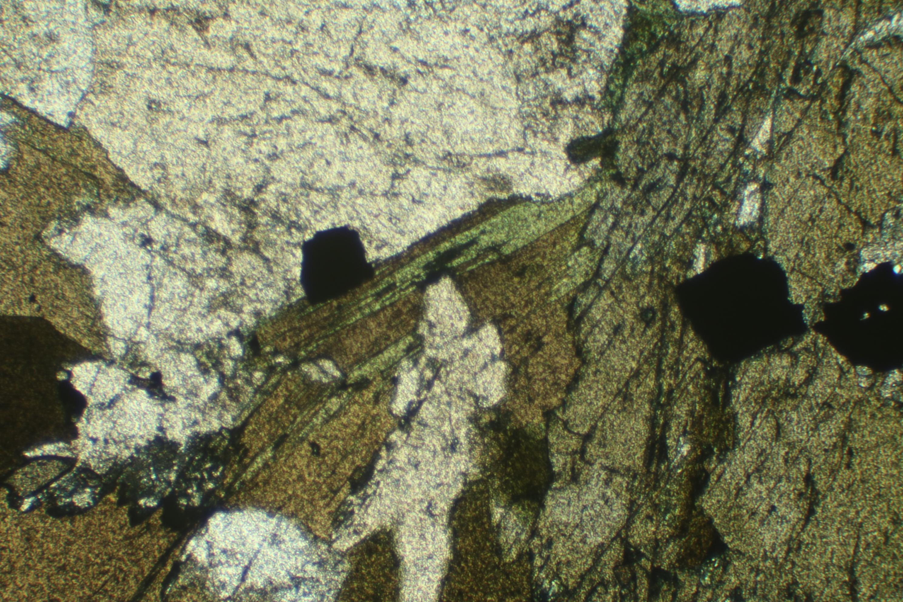
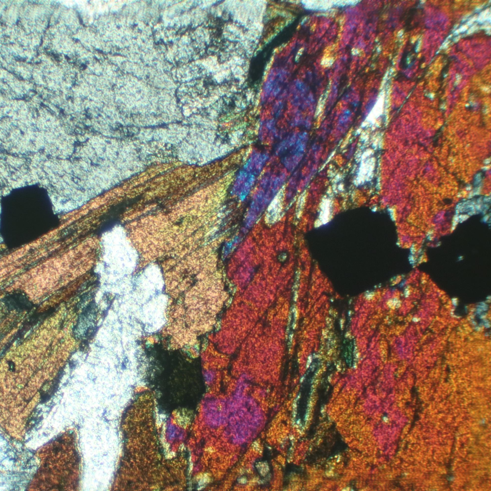
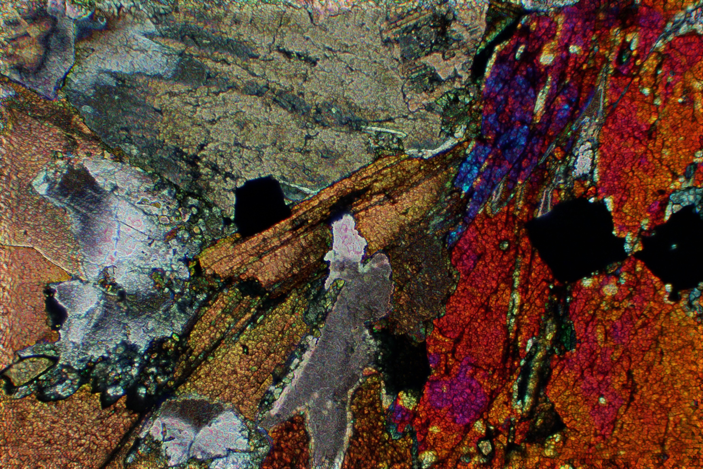
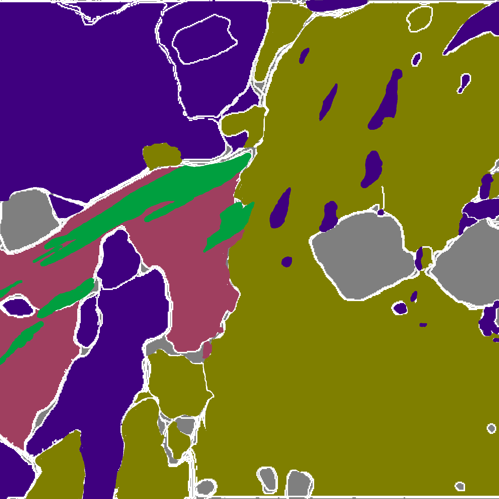

About
MICA is a petrographic analysis software company, focused on building advanced AI-powered tools for the mining sector.
We use Multimodal Imaging to automate the Classification and Analysis of mineral grains in thin-sections, allowing our partners to derive clear, actionable insights from complex datasets.




Why Choose MICA?
Our data-processing toolkit enables exploratory and laboratory teams to leverage computer vision and data-science. This means faster, more precise sample processing than with traditional analog setups. Through our desktop platform "MOSAIC", our partners have access to:
+ State-of-the-art computer vision models
+ External geospatial platform integrations
+ Custom solution training and optimization
+ Advanced analytical and reporting tools
Services
IMAGING

Users import data samples by simply dragging and dropping high-resolution image layers into the MOSAIC interface. From there, we perform multidimensional clustering and filtering to reveal hidden details with incredible clarity.
CLASSIFICATION

Our pre-trained AI models classify and identify individual mineral grains instantly - providing precise, real-time results that eliminate the guesswork of traditional analysis.
ANALYSIS

The MOSAIC platform provides deep insight into the mineralogy of your samples, by automatically producing context-rich size, spatial, and correlative distribution data that can be ported directly into other platforms.
Our Team
We are a group of academics and engineers who share a joint passion for petrography and data science. Our goal is to push the mining industry forward by supplementing current lab analysis methods with state-of-the-art computational technology.
Contact
Reach out to us at micatechnologiesinc@gmail.com, or read about us on our info pamphlet.